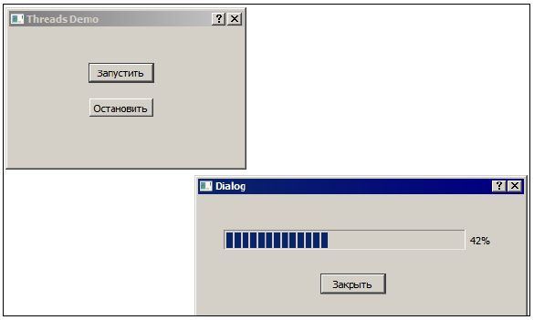
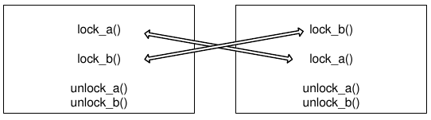

Вся нижеприведенная информация справедлива для Qt4.7. Однако, в Qt5.x, в рассматриваемых в этом тексте классах практически ничего не изменилось. Поэтому данное руководство можно использовать и для проектов на Qt4 и для разработок на Qt5.
В последнее время производительность процессоров наращивается, в основном, за счет увеличения количества потоков, которые процессор может выполнять одновременно, и, следовательно, производительность приложений может повышаться благодаря параллельной обработке данных. Поскольку линейную последовательность операций человеку проще осмыслить, чем нелинейную структуру из ветвящихся цепочек операций, программирование с использованием потоков считается сложным делом, и многие программисты стараются этим не заниматься. Мы покажем, что все не так уж сложно, если помнить и не нарушать несколько формальных правил обращения с потоками.
Не следует, однако, думать, что с несколькими потоками любую задачу можно решить быстрее, чем с одним потоком. Иногда бывает наоборот. Главная проблема, которая возникает при разделении задачи на несколько потоков, — проблема синхронизации. Нередко бывает так, что один поток проводит столько времени в ожидании, когда другие потоки создадут необходимые условия для его работы, что весь выигрыш от использования потоков сходит на нет.
ПРИМЕЧАНИЕ
В каких случаях потоки могут быть полезны практически всегда? Лучше всего для оформления в виде отдельного потока подходят те задачи, которые выполняют много работы и не требуют при этом частого обновления графического интерфейса программы (например, шифрование данных файла, поиск информации в большом массиве и т. п.). Если решение такой задачи будет размещено в потоке графического интерфейса, интерфейс может просто "зависнуть" — виджеты будут реагировать на действия пользователя с очень большой задержкой (или не реагировать вовсе). Еще одна ситуация, когда потоки являются беспроигрышным решением, — та, в которой задачи, решаемые потоками, не связаны между собой и потокам практически не приходится обмениваться данными друг с другом. Примером такой ситуации является web-сервер, в котором для выполнения каждого запроса клиента используется отдельный поток.
Если поток посылает большое количество сигналов элементам графического интерфейса, имеет смысл перенести задачу в поток, которому принадлежат элементы графического интерфейса. Сказанное относится, разумеется, только к Qt. При работе с игровым графическим движком, например, распределение задач может быть совсем другим.
Модель потоков графического приложения Qt предполагает, что существует один главный поток и несколько вспомогательных. Объекты графического интерфейса могут принадлежать только главному потоку. Но что делать, если у нас есть один или несколько потоков, которые должны выводить результаты своей работы, используя графический интерфейс пользователя? Сделать это совсем несложно, если вспомнить, что сигналы можно передавать между потоками.
Рассмотрим пример threadsdemo, в котором вспомогательный поток управляет состоянием строки индикатора в диалоговом окне. Если мы хотим, чтобы поток во всем вел себя как часть приложения Qt, мы должны создать класс-потомок класса QThread (листинг 5.1).
Листинг 5.1. Простейший класс потока
class Thread : public QThread
{
Q_OBJECT
public:
void run();
signals:
void progressed();
};
Минимум, что нужно сделать в классе-потомке QThread, — это перекрыть метод run() . Именно этот метод является процедурой потока, которая будет выполняться одновременно с главной процедурой приложения. Метод run() нашего потока тоже достаточно прост (листинг 5.2).
Листинг 5.2. Простейший метод run()
void Thread::run()
{
QTimer timer;
timer.setInterval(100);
timer.setSingleShot(false);
connect(&timer, SIGNAL(timeout()), this, SIGNAL(progressed()));
timer.start();
exec();
}
В этом методе мы подготавливаем и запускаем таймер, который будет периодически эмитировать сигнал progressed() (обратите внимание на связь "сигнал–сигнал", которую мы устанавливаем с помощью метода connect() ). Далее мы запускаем таймер и вызываем метод exec() для запуска цикла обработки событий потока. Появление у класса QThread метода exec() (введенное в Qt 4) позволяет вспомогательному потоку обрабатывать сигналы и события в соответствии с моделью Qt, так же, как это делается в главном потоке приложения. Иногда такое поведение удобно, иногда — нежелательно. Далее мы рассмотрим пример потока, который обходится без цикла обработки событий. В этом же примере процедура потока будет выполняться до тех пор, пока объект потока метод exec() не получит приказ завершить цикл обработки.
Некоторые методы класса QThread (например, start()) предназначены для вызова из внешних потоков. Другие методы, такие как exec() , предназначены исключительно для вызова из самого потока. Как отличить одну группу методов от другой? Разработчики Qt нашли элегантное и очевидное решение: все методы, которые предназначены исключительно для потока, в котором выполняется метод run() , объявлены в разделе protected класса QThread . Соответственно, они видимы в методе, перекрывающем метод run() класса QThread , и невидимы за его пределами. Рассмотрим определения двух методов из примера threadsdemo (листинг 5.3).
Листинг 5.3. Фрагмент примера threadsdemo
void Dialog::on_pushButton_clicked()
{
if (!thread) {
progressDialog = new ProgressDialog(this);
progressDialog->show();
thread = new Thread();
connect(thread, SIGNAL(progressed()),
progressDialog, SLOT(progressed()));
thread->start();
}
}
void Dialog::close_thread()
{
if (thread) {
thread->quit();
thread->wait();
delete thread;
progressDialog->close();
thread = 0;
}
}
В методе on_pushButton_clicked() мы создаем новый объект класса ProgressDialog , (окно с индикатором прогресса), новый объект класса Thread , связываем сигнал progressed() объекта thread со слотом progressed() объекта progressDialog (этот слот изменяет значение индикатора прогресса). После этого мы запускаем новый поток с помощью метода start(). Хотя поток thread и не владеет элементами графического интерфейса, он может управлять элементами, принадлежащими главному потоку (рис. 5.1).

Рис. 5.1. Управление графическими элементами из вспомогательного потока
Существует распространенное заблуждение, что к тому моменту, когда метод start() возвращает управление, метод run() потока уже выполняется. Это предположение может быть верным на некоторых платформах и ошибочным на других. Если вам необходимо сделать что-то в основном потоке, точно зная, что вспомогательный поток уже выполняется, дождитесь сигнала started().
Метод close_thread() проверяет, существует ли объект потока (переменная thread не равна 0) и если объект существует, вызывает его метод quit() . Это корректный способ завершения потока, который, в отличие от метода terminate(), не прерывает поток немедленно, а посылает в цикл обработки событий потока событие, приказывающее потоку завершиться. Если у потока нет собственного цикла обработки событий (мы не вызвали метод exec() в процедуре потока), стандартный метод quit() не сможет его завершить.
Поскольку метод quit() не может завершить поток немедленно, мы ожидаем завершения потока с помощью метода wait() . Этот метод блокирует выполнение вызвавшей его функции до тех пор, пока поток действительно не завершится. В качестве аргумента методу wait() можно передать максимальное время ожидания в миллисекундах. По истечении этого времени wait() вернет управление в любом случае. Поскольку мы уверены, что наш поток не зависнет навсегда, мы вызываем метод wait() без параметров, что означает неограниченное ожидание. После этого мы удаляем объект потока.
ПРИМЕЧАНИЕ
Если вы попытаетесь удалить объект потока до того, как его функция run() завершила все важные действия (в том числе удаление объектов, созданных в стеке функции), это, скорее всего, приведет к ошибкам, самой частой из которых является ошибка доступа к памяти.
Когда метод exec() главного потока приложения получает команду завершиться (что обычно означает завершение приложения), дополнительные потоки продолжают выполняться, как ни в чем не бывало. Если вы хотите, чтобы ваша программа завершалась корректно, а не продолжала работать как зомби, без интерфейса, удостоверьтесь в деструкторе класса главного окна (или в другом методе, который гарантированно вызывается в процессе завершения приложения), что все дополнительные потоки закончили свою работу. Возможно, их придется завершить прямо в деструкторе главного окна, и это лучше делать с помощью комбинации quit() /wait() , а не метода terminate() .
Для объекта progressDialog мы вызываем метод close() , что приводит к закрытию окна и удалению объекта, поскольку в конструкторе окна мы присвоили ему атрибут WA_DeleteOnClose . По умолчанию метод close() не приводит к уничтожению объекта окна, что позволяет нам, например, прочитать данные, введенные пользователем в диалоговом окне. В нашем случае пользователь в окне ничего не вводит, так что объект можно удалять непосредственно в процессе закрытия.
Весьма распространенная ошибка связана с непониманием, в контексте какого потока существует объект QThread. Если в методе run() мы попытаемся создать объект QTimer динамически, указав в конструкторе в качестве родителя this (листинг 5.4), то получим сообщение об ошибке, примерно такое: "QObject: Cannot create children for a parent that is in a different thread". Этим сообщением система предупреждает нас о том, что нельзя создать объект, у которого родитель принадлежит другому потоку.
Листинг 5.4. Создание динамического объекта в процедуре потока (неправильное)
void Thread::run()
{
QTimer * timer = new QTimer(this);
...
}
Все дело в том, что переменная this содержит указатель на объект Thread , а этот объект создается в главном потоке приложения и принадлежит ему. Переменная this не принадлежит тому потоку, в контексте которого вызывается метод run() . У объектов Qt есть метод moveToThread(), который позволяет передать объект из одного потока в другой. Но передавать объект потока в сам поток не рекомендуется, т. к. это может привести к разным странным ошибкам. Между прочим, метод moveToThread() не сработает, если у передаваемого объекта есть родитель, который, естественно, принадлежит исходному потоку. Прежде чем передать объект другому потоку, его надо "отцепить" от родителя, например, с помощью метода setParent(). Если же вам совершенно необходимо создать в потоке динамические структуры (как правило, хватает структур, объявленных в стеке), то можно вообще не указывать родителя (листинг 5.5).
Листинг 5.5. Создание динамического объекта в процедуре потока (правильное)
void Thread::run()
{
QTimer * timer = new QTimer(0);
...
}
Основы теории многопоточности
Взаимной блокировкой называют такое состояние, когда несколько процессов или потоков заблокированы и выход каждого процесса (потока) из блокировки зависит от выхода из блокировки всех остальных.
Эдвард Коффман (Edward G. Coffman, Jr) сформулировал в 1971 году четыре условия, выполнение которых может привести к взаимоблокировкам в системе.
1. Наличие ресурсов, которые могут использоваться только одним процессом (потоком) в каждый момент времени. Такие ресурсы называются критическими.
2. Процесс (поток), имеющий контроль над критическим ресурсом, может попытаться захватить контроль над другими критическими ресурсами.
3. Пока процесс (поток) владеет критическим ресурсом, никакой другой процесс (поток) не может "отобрать" этот ресурс силой.
4. Циклическое ожидание: процессы захватывают ресурсы в таком порядке, что для продолжения работы процесса A необходимо, чтобы процесс B освободил критический ресурс, но процесс B может продолжить работу только тогда, когда процесс А освободит свой критический ресурс.
Последний пункт самый важный и нуждается в более подробном разъяснении. Допустим, один процесс захватил ресурс A и пытается захватить ресурс B. Если ресурс B захвачен другим процессом, выполнение первого процесса приостановится до тех пор, пока второй процесс не освободит B. В это время второй процесс пытается захватить A, не освобождая перед этим B. В результате его выполнение тоже приостанавливается. Подобный тупик может возникнуть только в том случае, если процессы (или потоки) пытаются получить ресурсы в разном порядке (один использует сначала A, потом B; второй — сначала B, потом A). Два простых правила, которые помогают избежать взаимоблокировок: во-первых, не следует захватывать два критических ресурса одновременно, а во-вторых, нужно стараться освободить критический ресурс как можно скорее (ведь его может ожидать другой процесс или поток). Если же процессам (потокам) требуется одновременно держать под контролем более одного критического ресурса, то нужно удостовериться в том, что все процессы (потоки) пытаются получить этот контроль в одном и том же порядке (рис. 5.2).

Рис. 5.2. Возникновение взаимоблокировки при разном порядке обращения к критическим ресурсам
Критические области
Критической областью называется часть программы, в которой она получает доступ к критическому ресурсу. Для того чтобы разные потоки программы не конфликтовали из-за критических ресурсов, следует соблюдать четыре правила:
1. Два потока не могут одновременно находиться в критической области.
2. Какие-либо предположения относительно быстродействия процессоров и их количества недопустимы.
3. Поток, находящийся вне критической области, не должен блокировать выполнение других потоков.
4. Ни один поток не должен ожидать бесконечно своей очереди для входа в критическую область.
Я хотел бы обратить особое внимание на правило 2. Это правило относится к работе с потоками вообще. Нельзя программировать многопоточные приложения, основываясь на предположении, что какой-то фрагмент кода выполняется быстрее, чем другой, даже если среднестатистически это так и есть. В многозадачной операционной системе вы не можете знать, сколько времени фактически займет выполнение определенного участка кода (если только вы не контролируете процессор специальными средствами). Четырем вышеперечисленным условиям должны отвечать все примитивы синхронизации, управляющие доступом в критические области.
Реентерабельность
Мы говорим, что функция реентерабельна, если она может быть вызвана повторно из того же потока в то время, когда она уже вызвана в каком-то другом участке программы (и это не приведет к ошибкам). Реентерабельность имеет значение при обработке сигналов и исключений, а также для функций, вызываемых рекурсивно, и функций обратного вызова. Тем, кто никогда не задумывался о свойстве реентерабельности функций, может показаться странным, что большинство функций, которые мы пишем, обладают этим свойством. Рассмотрим, например, рекурсивную функцию вычисления факториала (листинг 5.6).
Листинг 5.6. Типичная реентерабельная функция
unsigned long factorial(unsigned long x)
{
if (x < 2) return 1;
return x*factorial(x-1);
}
При каждом вызове функции factorial() в стеке создается область для хранения данных, связанных именно с этим вызовом. И до тех пор, пока стек не переполнится, один вызов factorial() не будет мешать другим вызовам. Иначе говоря, функция factorial() реентерабельна. Из этого примера можно вывести правило: все функции, которые работают только с локальными данными, расположенными в стеке, являются реентерабельными. Нереентерабельными могут быть (а могут и не быть) функции, которые обращаются к глобальным данным, расположенным за пределами стека. Большинство интересных и важных функций системы вынуждено обращаться к данным за пределами стека, но это не означает, что такие функции не могут быть реентерабельными.
Потоковая безопасность
Помимо реентерабельности важной характеристикой функции является потоковая безопасность (thread safety). Мы говорим, что функция потокобезопасна, если она может вызываться одновременно из разных потоков приложения и это не приведет к ошибкам. Может показаться, что любая реентерабельная функция потокобезопасна, но это не так. Рассмотрим пример (листинг 5.7).
Листинг 5.7. Реентерабельная, но не потокобезопасная функция
volatile bool lock = false;
bool foo()
{
1:
if (lock) return false;
2:
lock = true;
... // критический код
n:
lock = false;
return true;
}
Вызов функции foo() , прерывающий другой вызов foo() , безопасен, если оба вызова выполняются из одного потока. Действительно: допустим, что значение переменной lock равно false на момент выполнения строки 1, и что вызов foo() был прерван другим вызовом foo() (например, в результате поступления сигнала), между строками 1 и 2, причем второй вызов выполнен в том же потоке, что и первый. Управление к первому вызову не может вернуться до тех пор, пока второй вызов foo() не вернет управление, а в этот момент переменная lock снова будет равна false .
Сама строка 2 не может быть прервана вызовом, сделанным из того же потока, т. к. она выполняется одной инструкцией микропроцессора (сказанное верно для процессоров семейства Intel, но если для какой-то другой модели процессора это не так, то функция foo() потеряет реентерабельность). То же относится и к строке n. Если второй вызов foo() произойдет между строками 2 и n, это приведет к тому, что второй вызов функции вернет управление в строке 1, т. е. функция сообщит нам, что доступ к критическому коду ей запрещен. Однако если функция foo() будет вызываться из нескольких потоков, то два вызова вполне могут попасть в область между строками 2 и n одновременно.
Точно так же, не всякая потоко-безопасная функция является реентерабельной. Например, если в начале функции вызывается мьютекс (подробнее о них будет рассказано далее), повторный вызов функции из того же потока может привести к взаимоблокировке, когда одна функция ждет завершения другой, но не может вернуть ей управление. Для того чтобы избежать блокировок этого типа, мьютексы часто проектируются так, чтобы вызовы мьютекса из одного потока не препятствовали друг другу.
ПРИМЕЧАНИЕ
Если функция работает только с локальными данными (объявленными в стеке), то она является реентерабельной и потокобезопасной одновременно.